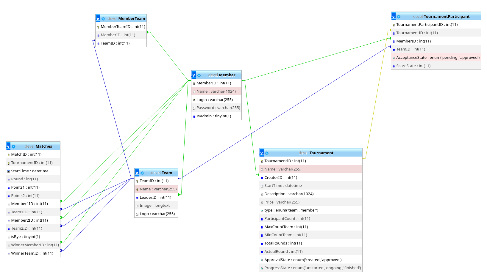

Studentské turnaje
- Autoøi
- Tomá¹ Valent
xvalen27@stud.fit.vutbr.cz -
Prihlasovanie; registrácia; vytváranie, editátia a mazanie a ¹tartovanie turnajov; u¾ivateµský profil a ¹tatistiky hráèa; dokumentácia
- Adam Ru¾a
xruzaa00@stud.fit.vutbr.cz -
REST API; controllere; implentácia vytvárania zápasov a interné veci okolo priebehu turnaja; routovanie; dark mode; úpravy aby projekt fungoval na Eve
- Magdaléna Bellayová
xbella01@stud.fit.vutbr.cz -
Vytváranie, mazanie a edtácia tímov; team-controller; prezentaèné video; beta testing
- URL aplikace
- https://www.stud.fit.vutbr.cz/~xruzaa00/IIS
U¾ivatelé systému pro testování
Existujúci zástupci v¹etkých rolí u¾ívateµovs.
| Login | Heslo | Role |
|---|
| admin | admin | Administrátor |
| test | 12345678 | Be¾ný u¾ívateµ |
Neregistrovaný u¾ívateµ má vlastnú mo¾nos» prihlásenia sa ako hos».
Video
Link na video
Implementace
V tomto projekte máme niekoµko controllerov vyu¾ívajúcich REST API na implementovanie jednotlivých prípadov pou¾itia.
- base-controller.php
- match-controller.php
- team-controller.php
- tournament-controller.php
- user-controller.php
Ako ich názvy vypovedajú, ka¾dý obstaráva urèitú èas» informaèného systému a prípady pou¾itia podµa zadania. Base-controller implementuje metódy controlleru a dedia z neho v¹etky ostatné controllery. Menu vpravo hore je implementované pomocou routera v router.php. V adresári scripts je skript na vytvorenie adminského úètu seed.php.
Administrátorské práca sú realizované pomocou bool flagu v tabuµke u¾ívateµov. Medzi neprihlásenými a prihlásenými u¾ívateµmi sa rozli¹uje na základe superglobálnej prememennej a jej obsahu. Profil u¾ívateµa je prístupný cez zoznam hráèov a ka¾dý prihlásený u¾ívateµ sa vie na svoj profil prekliknú» kliknutím na svoje pou¾ívateµské meno vpravo hore, kde ho následne vie editova» a zmaza». Pre spravovanie svojich turnajov a tímov sa ukladá v databáze ich zakladateµ/tvorca, ktorý potom zároveò s adminom má právo daný turnaj/tím spravova».
Databáze

Instalace
Projekt bol vyvýjaný na verzii PHP 8.1. na OS Linux (Ubuntu, Endeavour). Pre prácu s databázou sme vyu¾ívali MySQL a balíèky Xampp a PHPMyAdmin.
V PHPMyAdmin sme si ka¾dý vytvorili lokálne databázu a inicializval ju pomocou prilo¾eného SQL skriptu v /attachements v PHPMyAdmin v sekcii SQL. Po vytvorení databáze sa mô¾eme k nej pripoji» pomocou .env. V zlo¾ke /IIS-project sa nachádza ¹truktúra ná¹ho .env súboru. Ten treba upravi» podµa nasledujúceho popisu. Do MYSQL_DSN pridáme host napr. "127.0.0.1", názov databáze do "dbname" a do port treba lo¾i» cestu k mysql.sock, napr. /opt/lampp/var/mysql/mysql.sockÏalej do MYSQL_USER zadáme meno a do MYSQL_PASS heslo na prihlásenie sa do databáze.
Teraz len staèí v zlo¾ke /IIS-project/scripts spusti» skript install.sh na nain¹talovanie composera a spustenie php serveru zo správnych zlo¾iek. Teraz je php server spustení a dá sa k nemu pristúpi» takto "http://127.0.0.1:8000". Server sa spú¹»a z WWW zlo¾ky pomocou php -S 127.0.0.1:8000 a ukonèuje sa pomocou CTRL+C.
Známé problémy
- Pri zmazaní obidvoch tímov z niektorého zápasu v tabuµke Matches aj v ¹tatistikách zostane záznam, kde obidva tímy sú NULL